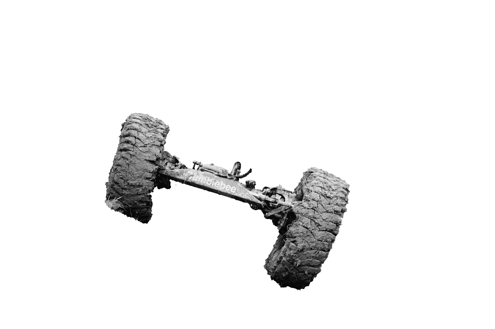
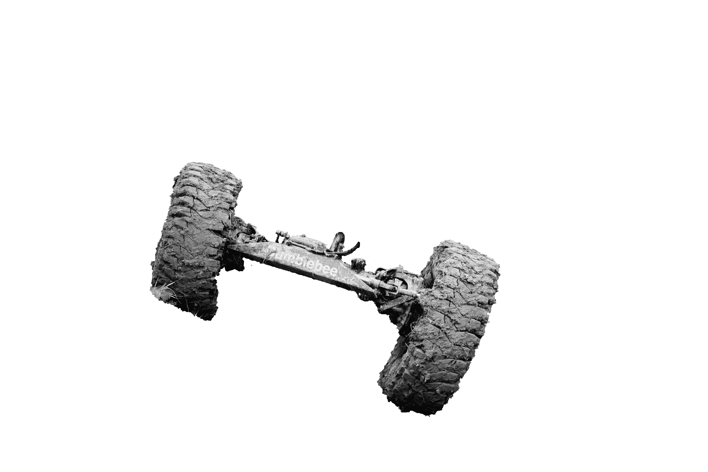

Mitte 1982 hatten drei Leute die Idee einen Geländewagen Club zu gründen. Im November des selben Jahres wurde der GWC (Geländewagenclub Schweiz) in Niederweningen ZH gegründet. Anwesend waren ca. 25 Geländewagenfahrer die ihrem Hobby frönen wollten. Er versteht sich als Markenunabhängiger Club. Es wurden gemeinsam diverse Trials in Deutschland und in der Schweiz besucht. Bald organisierte der GWC Trials des Schweizerischen Trialcup. Der Schweizerische Trialcup war der Vorläufer des heutigen Dachverbandes FSG. Der Club hat einen Bestand von 112 Mitgliedern, davon 68 Aktive (Stand GV 2021).
Ziel und Zweck unseres Sportes
- Förderung einer positiven Grundeinstellung zum Geländefahrzeug.
- Organisieren von Projekten im Zusammenhang mit Geländefahrzeugen.
- Theoretische und praktische Förderung der Fahrtüchtigkeit der Mitglieder, durchführen von entsprechenden Veranstaltungen. Diese Veranstaltungen (Trials) sind keine Rennen auf Zeit, sondern reine Geschicklichkeitswettbewerbe, welche ausschliesslich in Kiesgruben ausgetragen werden.
- Die Fahrzeuge werden in verschiedene Klassen eingeteilt, so entstehen für unterschiedliche Fahrzeuge keine Vor- oder Nachteile.
Vorstand →